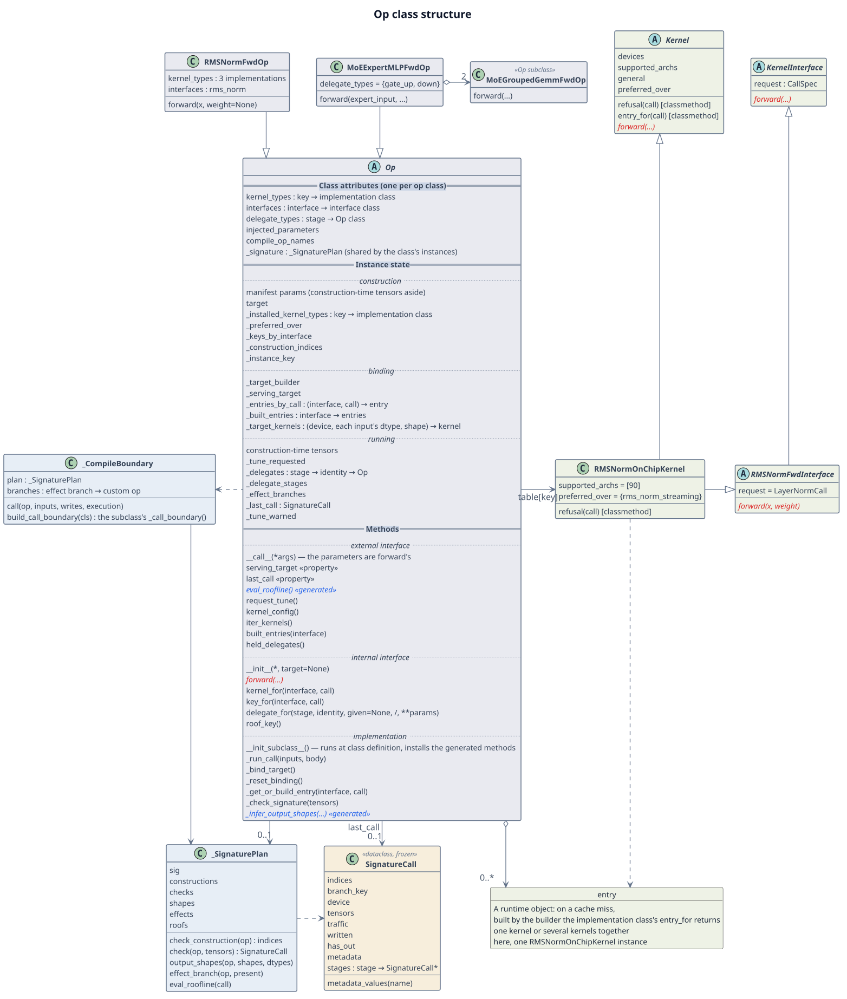

Class structure and instance state¶
This page describes:
- the structure of the
Opbase class and the classes around it; - how instance state is grouped;
- what the base class guarantees when an op, a target, a kernel implementation or a base class field is added.
It is written for developers who change the Op base class, _signature_codegen.py or
compile_boundary.py.
1. Class structure¶

Figure 1 The structure of Op and the classes around it, with some of their members.
Legend:
- A solid arrow is a reference, a hollow diamond is holding, a dashed arrow is a dependency, and a hollow triangle is inheritance;
- red italics are abstract methods a subclass must write by hand; blue italics marked
«generated» are abstract methods on
Opthat the generated code implements for a class with a manifest entry, so a subclass does not write them; of these,eval_roofline()is generated only when the entry has arooflinefield; an italic class name is an abstract class; - the background color marks the layer: blue-grey for the op layer (
Opand its subclasses), light blue for code generation (_SignaturePlan,_CompileBoundary), beige for call records (SignatureCall), and light green for the kernel layer (the kernel base classes, interfaces, implementation classes and entries); - the box without an icon (entry) is a runtime object, not a class; a class marked «Op
subclass» inherits
Op, with the inheritance arrow left out to keep the edges clear; a member marked «property» is a read-only property, read as an attribute and not called; - the
Opbox has three parts, separated by double lines and bold headings: class attributes, instance state and methods. Within each part, dotted lines and italic headings form groups: instance state in the construction, binding and running groups of Table 2; methods in the external interface, internal interface and implementation layers of the index page § Members of the base class.
Table 1 What the main base classes are responsible for
| No. | Class | Visibility | Responsible for | Details |
|---|---|---|---|---|
| 1 | Op |
public | the op's lifecycle: at construction, checking the parameters and installing the implementation table; at each call, checking the signature, selecting the target, getting the kernel, keeping the record and undoing on failure; holding sub-ops | Construction and calls, Composite ops |
| 2 | SignatureCall |
public, read-only | the record of one call that passed the signature check, which callers use as read-only (stages is written before the record becomes last_call): index values, tensor shapes and dtypes, traffic, the sub-ops' calls; last_call and the roofline read it |
Call records and tuning § last_call |
| 3 | KernelInterface |
public | the call contract of one kernel interface: the call spec's type and forward's arguments; every implementation of the interface inherits it |
How an op selects a kernel |
| 4 | Kernel |
public | the base class of kernel implementations: declares the devices it is available on (devices, supported_archs), the calls it serves (refusal) and its precedence over other implementations (general, preferred_over), and provides its builder through entry_for |
How an op selects a kernel |
| 5 | _SignaturePlan |
internal | the table of functions one op class's manifest signature generates: construction check, call check, output-shape inference, effect branch, roofline evaluation; shared by the class's instances | Construction and calls § The seven steps of a call |
| 6 | _CompileBoundary |
internal | registers the custom ops for an op class with a compile boundary and generates _call_boundary, so the op is one node of the graph in torch.compile |
Construction and calls § Call entry points |
Visibility follows the Python convention: a name starting with an underscore is non-public,
used only by the base class and the generated code, and a subclass neither calls nor
implements it. SignatureCall is defined in the private module _signature_codegen.py, and
callers get its instances through op.last_call.
How the classes in the figure relate:
- At class definition:
__init_subclass__installs the signature methods and the compile boundary the manifest entry generates, and records the manifest parameter names a target's builder is called with.- A class without a manifest entry gets no signature methods, and its parameter names are an empty tuple.
- When an instance is constructed,
Op.__init__then runs the construction check.
_SignaturePlan: every class with a manifest entry holds_signature, the_SignaturePlanall its instances share.- The first time a construction point is used, it generates that point's check functions and caches them in itself.
- These caches depend only on the manifest.
_CompileBoundary: registers one custom op per effect branch and generates_call_boundary().- A branch is decided by the inputs written, whether
outis passed, and the outputs returned. - The custom op's body looks the instance up by the key it was registered under and calls
Op._run_call().
- A branch is decided by the inputs written, whether
- Entries and implementation classes: an entry is built by the selected implementation
class. An implementation class inherits both
Kerneland a kernel interface; for example,RMSNormOnChipKernelinheritsKernelandRMSNormFwdInterface.
2. Instance state¶
Instance state is grouped by how the fields behave: the fields of one group are treated alike when a target selection is undone, though they may be written at different times. Two questions decide a field's group:
- Does it depend on the target this call selected? If so, it is in the binding group, reset when the target selection is undone.
- A field that does not depend on it is kept on undo; then, is it written again after construction? If not, it is in the construction group; if so, in the running group.
The binding group's three caches are built empty at construction, but their contents depend on the selected target, so they belong to the binding group.
Table 2 Instance state
| No. | Group | Written | On undoing the target selection | Fields |
|---|---|---|---|---|
| 1 | construction | at construction, never after | kept | manifest parameters (construction-time tensors aside), target, _installed_kernel_types, _preferred_over, _keys_by_interface, _construction_indices, _instance_key |
| 2 | binding | when a target is selected and kernels are built | reset to initial values | _target_builder, _serving_target, _entries_by_call, _built_entries, _target_kernels |
| 3 | running | still written after construction | kept | construction-time tensors, _tune_requested, _delegates, _delegate_stages, _effect_branches, _last_call, _tune_warned |
Notes on Table 2:
- Construction group: written by the constructor and
Op.__init__. A composite op that declares no kernel of its own does not build_installed_kernel_types,_preferred_overor_keys_by_interface, and reads the empty mappings on the class attributes. - Binding group: built empty or given class-attribute initial values at construction,
listed in Table 3; written in steps 4 and 5 of a call, see
Construction and calls § The seven steps of a call; reset to the
initial values by
_reset_bindingon undo, see Construction and calls § Failure and undo. - Running group:
_tune_requestedstarts asFalse, and onlyrequest_tune()sets it toTrue;_effect_branchesis decided by the manifest, this instance's construction parameters and which optional inputs a call passes, not by the selected target;- a construction-time tensor (such as
LongRoPEFwdOp'srescale_factors) whose device or dtype differs from the call's is converted at the call and written back to the instance; _tune_warnedremembers that the tuning warning has been issued, so an instance warns once.
How the binding and running groups relate
Both groups are written during calls; they differ only in whether their contents depend on the target this instance selected:
- The binding group is "which target this call selected, and what was built for it":
the selected target, its builder, and the kernels built and cached under it. They hold
only while this target is the selected one, so when the call that selected the target
fails,
_reset_bindingresets the whole group to its initial values, and the next call selects and builds again. - The running group is "what calls accumulate, whichever target is selected": the held sub-ops, the effect-branch cache, the record of the last successful call, the tuned mode and the warning flag. They still hold under another target, so undo keeps them.
The two groups interact in three places:
- Undo travels down through the sub-ops in the running group. When a composite op
undoes, it also calls
_reset_bindingon every sub-op in_delegates: the parent keeps holding the sub-ops, and each sub-op resets its own binding group. - The running group's tuned mode decides how the binding group is built. When the
instance is in tuned mode, a kernel newly built in the binding group is put in tuned
mode right after it is built;
request_tune()sets_tune_requestedand sends a tuning request to the built kernelsiter_kernels()yields. Kernels a target built are not among them, and when the request cannot reach the target, it warns. - Undo does not touch the record of the last success. When the target was selected
in the failing call, the binding group is reset; undone or not, a failed call does not
write
_last_call, andlast_callstill points to the earlier successful call.
Table 3 Binding group fields
| No. | Field | Contents | Initial value |
|---|---|---|---|
| 1 | _target_builder |
• The selected target's builder • None means the in-tree kernels |
class-attribute default _UNRESOLVED, meaning not selected yet |
| 2 | _serving_target |
The selected target's name, which the serving_target property reads |
class-attribute default None |
| 3 | _entries_by_call |
The cache from (interface, call) to entry; a hit is one lookup |
an empty table Op.__init__ builds when it installs the implementation table |
| 4 | _built_entries |
The entries under each interface, keyed by (implementation class, identity); built_entries reads it |
an empty table Op.__init__ builds when it installs the implementation table |
| 5 | _target_kernels |
• The kernels a target built, keyed by device and each input's dtype and shape • An optional input that is not passed holds its own slot |
an empty table Op.__init__ builds |
The base class's methods read and write these fields without asking whether they exist, because after construction they all do:
- the binding group's three cache fields, and the running group's
_delegates,_delegate_stagesand_effect_branches, are built byOp.__init__; _target_builderand_serving_targethave class-attribute initial values.
3. What the base class guarantees when something is added¶
Adding an op, a composite op, a target or a kernel implementation leaves the base class's guarantees unchanged. The "What to do" column of Table 4 lists what joining the base class takes; the full steps to add an op (tests, benchmarks, registration and so on) are in Adding a new op.
Table 4 What is added, and what the base class guarantees
| No. | Added | What to do | The base class guarantees |
|---|---|---|---|
| 1 | an op with a compile boundary | • A manifest entry of the same name, with a call-time tensor input and no composition • Passing a cold fullgraph=True compile• When it runs kernels of its own, declaring kernel_types and interfaces• The constructor and forward• Registering the cold-compile test |
_run_call does the checks, target selection, recording and failure handling |
| 2 | an op without a compile boundary | • A manifest entry of the same name • When it runs kernels of its own, declaring kernel_types and interfaces• The constructor and forward |
the same |
| 3 | a composite op | delegate_types, with every sub-op held through delegate_for |
every sub-call is filed under one stage, or the call raises |
| 4 | a target | registering a builder for the op | the same checks, recording and failure handling as the in-tree kernels |
| 5 | a kernel implementation | • Inheriting both Kernel and the kernel interface, and registering, as in Adding a kernel to an op• Overriding the default refusal, entry_for and precedence where needed |
• The op does not change • Entries are cached by (implementation class, identity) |
| 6 | a base class state field | • Building it in Op.__init__, or giving it a class-attribute initial value• When it belongs to the binding group, adding it to _reset_binding's reset list |
• The field always exists after construction • Nothing of it remains after a target selection is undone |